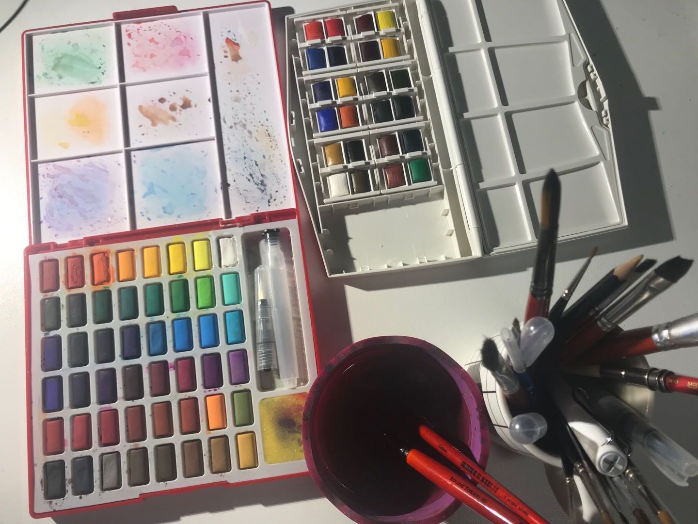
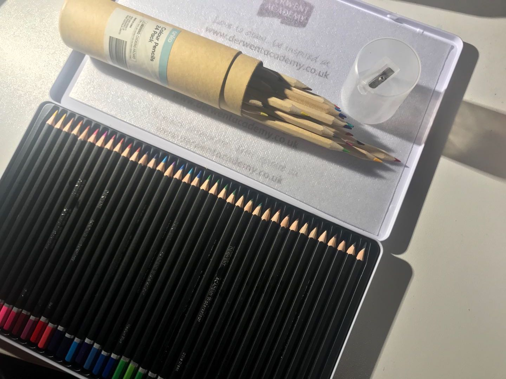
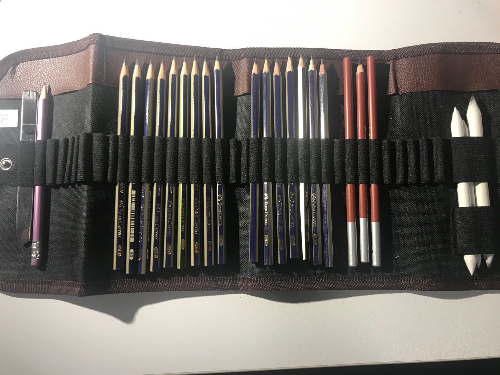
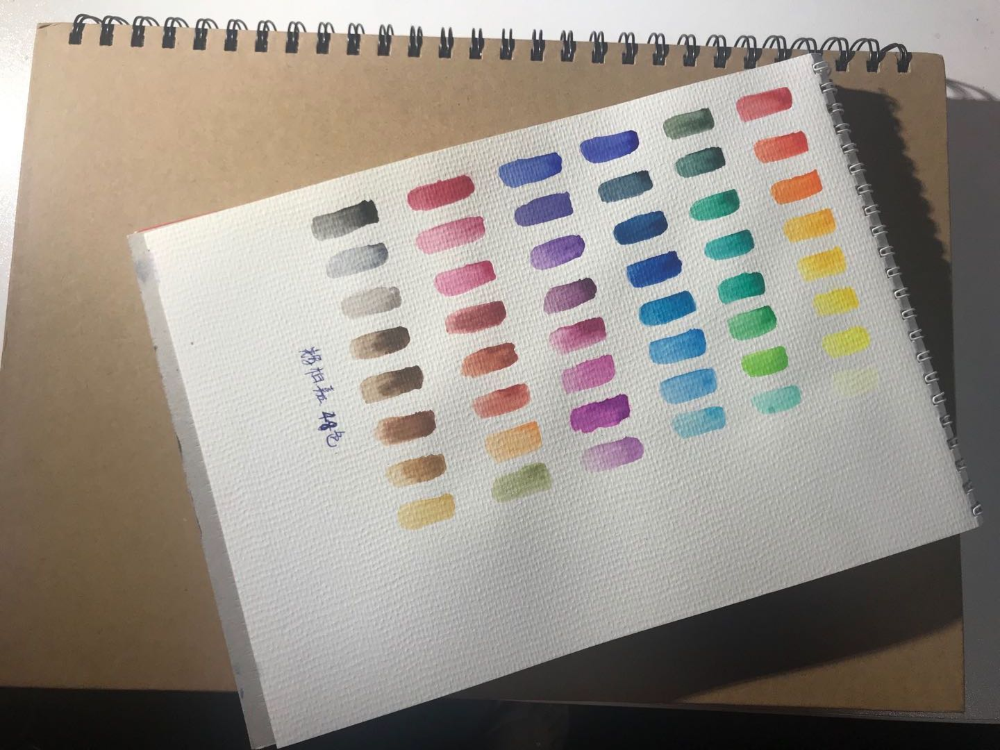
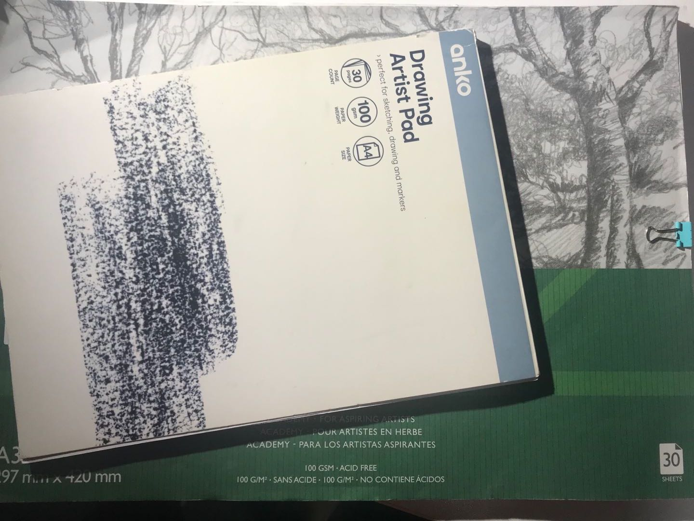

| Shots | Detailes |
|---|---|
|  |
Actions: Introduce my watercolour art materials VoiceOver: Here are the watercolour painting materials. I have some painting brushes of different size. I also have 2 watercolour solid color painting set and a bottle to have some water in. I use these materials for my water-painting creation. |
| Shot 1 | |
|  |
Actions: Introduce my colour pencils art materials VoiceOver: Here are the colour pencils materials. I have 2 sets colour pencils. One is very normal with only 24 pack. Another one is 36 pack but the interesting part is that this pack can be dissolved in water. |
| Shot 2 | |
|  |
Actions: Introduce my sketching art materials VoiceOver: Here are my sketching materials. I have a very simple sketching roller set. It contains my normal pencils of different shades of color and different hardness，several charcoal pencils，paper brush pens and a blader. |
| Shot 3 | |
|  |
Actions: Introduce my watercolour paintings VoiceOver: I have 2 watercolour pads of mine. I will get through these paintings to water the progress I have made during progress. |
| Shot 4 | |
|  |
Actions: Introduce my sketching VoiceOver: I have 2 sketching pads of mine. Colour penciled drawing and sketching are all in these 2 pads. I will get through these sketching as well for you. |
| Shot 5 |